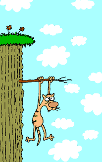

 |
El Manx es una de las siete razas, oficialmente reconocidas, de gatos que carecen total o parcialmente de cola. La raza contempla dos variedades; los "Stumpy" cuya cola es muy pequeña, no debe superar los 3 cm y los “Rumpy”, carentes totalmente de cola y con un orificio al final de la columna.
Tipo: mediano, de aspecto voluminoso
Pelaje: corto, denso, pelusa abundante
escrupuloso, por su pelo corto bastará con cepillarlo
de vez en cuando para evitar la acumulación de
pelo muerto.
Exótico de pelo corto
Tipo: mediano a grande, macizo
Pelaje: corto, denso, suave, afelpado
demasiado meticuloso de su pelaje. Bastará con
cepillados frecuentes para eliminar el pelo muerto.
American Curl
Tipo: tamaño medio
Pelaje: sedoso, fino, generalmente semilargo
orejas curvadas.
El American Curl no necesita una atención especial,
bastaría con cepillarlo frecuentemente para evitar que
el pelo se le anude especialmente en los ejemplares
de pelaje semilargo. Las orejas requieren una limpieza
frecuente, suele acumularse serosidad en la estrecha
base debido a la curvatura característica.
Himalayo
Tipo: tamaño medio, macizo
Pelaje: sedoso, suave, denso, largo
El gato Himalayo es el resultado del
cruce ideado por el hombre entre gatos Persas y Siameses.
y riguroso de su pelaje. Como ocurre con todos los
gatos de pelo largo, necesitarán nuestra ayuda para
mantener su cabellera en perfectas condiciones ya
que por ellos mismos no serán capaces.
El descuido en este sentido puede originar en el gato
problemas de higiene y salud.
Selkirk Rex
Tipo: gato grande, grueso y con el pelaje rizado
Pelaje: tupido, esponjoso, pelusa abundante, rizos muy acusados que cubren todo el cuerpo
su pelono debe ser cepillado con demasiada frecuencia.
Los baños pueden espaciarse un poco más del
resto de gatos.